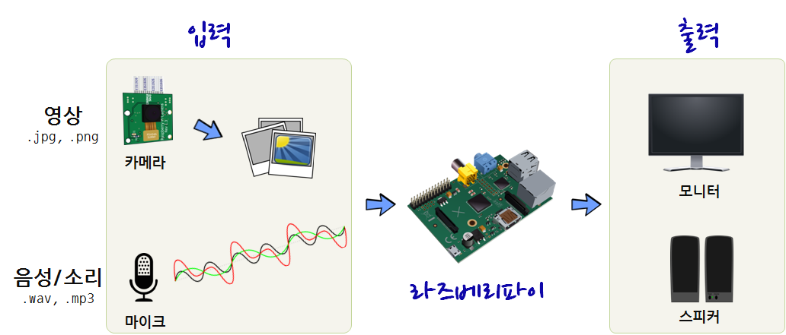
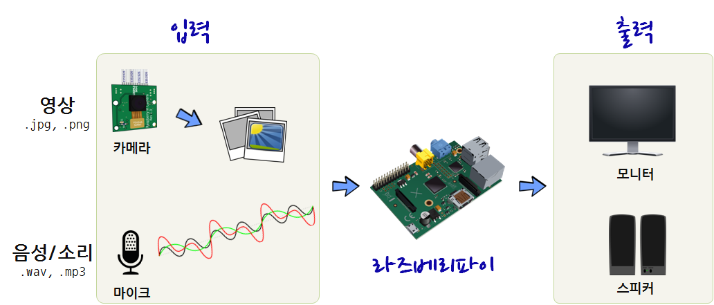

xwMOOC 라즈베리 파이
인공지능 준비
학습 목표
- 라즈베리파이 인공지능 개발을 위한 사전준비 상황을 점검한다.
라즈베리파이 사전준비
라즈베리파이를 인공지능 기계로 전환하는데 있어 먼저 입출력 장비를 갖춘다. 시각정보처리를 위해 카메라 를 시각정보 입력 장비로 잡고, 출력은 모니터 로 설정한다. 청각정보처리를 위해 마이크 를 청각정보 입력 장비로 잡고, 출력은 스피커 로 설정한다.


라즈베리파이를 인공지능 기계로 전환하는데 있어 먼저 입출력 장비를 갖춘다. 시각정보처리를 위해 카메라 를 시각정보 입력 장비로 잡고, 출력은 모니터 로 설정한다. 청각정보처리를 위해 마이크 를 청각정보 입력 장비로 잡고, 출력은 스피커 로 설정한다.
